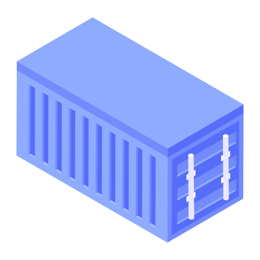
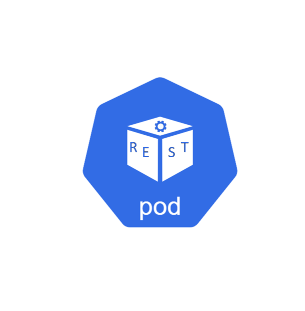

ClusterIP Service cung cấp một IP/DNS nội bộ ổn định (mongo-service) để các Pod khác trong cluster kết nối tới MongoDB, không cần biết Pod Mongo nằm ở đâu.
sourcecode/section_13_kubernetes_k8s_basic/lab3_service_clusterip/.Tạo file mongo-cluster.yaml:
apiVersion: v1
kind: Service
metadata:
name: mongo-service
spec:
type: ClusterIP
selector:
app: mongo
ports:
- protocol: TCP
port: 27017
targetPort: 27017
---
apiVersion: apps/v1
kind: Deployment
metadata:
name: mongo-deployment
spec:
replicas: 1
selector:
matchLabels:
app: mongo
template:
metadata:
labels:
app: mongo
spec:
containers:
- name: mongo
image: mongo
ports:
- containerPort: 27017💡 Không chỉ định type thì mặc định cũng là ClusterIP.
kubectl apply -f mongo-cluster.yaml
kubectl get service
kubectl get service mongo-service -o wide
kubectl describe service mongo-service
kubectl get deployment
kubectl get pods -o wideQuan sát: TYPE = ClusterIP, CLUSTER-IP là một IP nội bộ, PORT(S) = 27017/TCP (không có nodePort).
kubectl delete -f mongo-cluster.yamlkubectl get service mongo-service hiển thị TYPE = ClusterIP.CLUSTER-IP (dạng 10.x.x.x) và không có EXTERNAL-IP.mongo-service:27017 từ trong clusterkubectl get pods và kubectl describe service mongo-service (mục Endpoints phải có IP Pod).